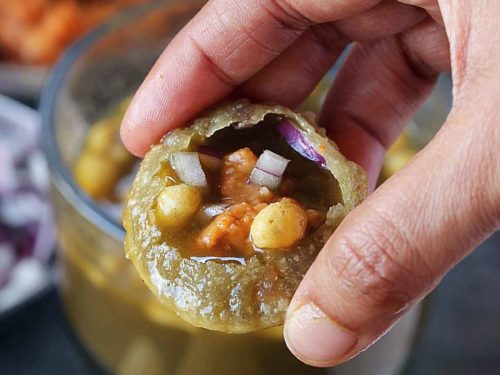

How To Make Pani-Puri (Water-Balls) At Home

Discription:
Pani Puri, also known as Golgappa or Puchka, is a popular Indian street food consisting of crispy, hollow
puris, a flavorful filling, and a tangy, spicy pani (water). The puris are made from semolina or
wheat flour and are fried until puffed and crispy. The filling typically includes mashed
potatoes, chickpeas, and onions, while the pani is a mixture of spiced and flavored water, often
with tamarind, mint, and other herbs.
Pani-Puri Ingredient:
For the Puri (Puffed-Crispy Shells):
- 1 cup semolina (rava or suji)
- 1/8 teaspoon baking soda
- 1 tablespoon all-purpose flour (maida)
- 6 tablespoons water (or as needed)
- 1/4 teaspoon salt
- 1 teaspoon oil
- Oil for deep frying
Procedure:
- Mix semolina, all-purpose flour, salt, and baking soda.
- Gradually add water to form a stiff dough.
- Rest the dough for 30 minutes.
- Roll out small circles and deep fry until golden brown and crisp.
Potato Filling:
- Ingredients:
- 3 large potatoes, boiled and diced
- 1 red onion, finely diced
- 1/2 cup boiled chickpeas (or white peas)
- 1/2 cup chopped coriander leaves
- 1 tsp ground cumin
- 1 tsp pani puri masala or chaat masala
- 1/2 tsp chili powder
- 1 tsp black pepper
- 1/2 tsp salt
- Procedure:
- Combine all ingredients in a bowl.
- Mix well and mash slightly.
Spiced Water (Pani):
Ingredients:
- 1 cup mint leaves, chopped
- 1/2 cup coriander leaves, chopped
- 2-3 green chilies, chopped
- 1 inch ginger, chopped
- 1/2 tsp cumin powder
- 1/2 tsp chaat masala
- 1/4 tsp black salt
- 1/2 cup tamarind pulp
- 2-3 tbsp jaggery or sugar (adjust to taste)
- 1/4 tsp red chili powder (optional)
- 1.5 - 2 cups water
- Boondi for garnish
Procedure:
- Grind mint leaves, coriander leaves, green chilies, ginger, and spices into a fine paste.
- Add the paste to water, along with tamarind pulp, jaggery/sugar, and adjust seasoning.
- Add boondi and refrigerate until chilled.
Assembly:
- Make a small hole in the top of each puri.
- Fill the puri with the potato filling.
- Add a spoonful of sweet chutney (optional).
- Dip the puri into the chilled spiced water.
- Serve immediately.
Conclusion:
So This is the easiest way to make Pani-puri (Puffed-Crispy water shells) at home with easy...
Follow For More Recipies...!!